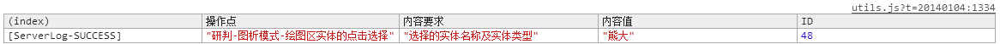
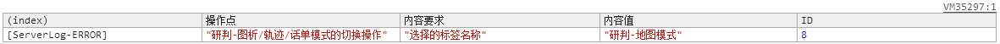
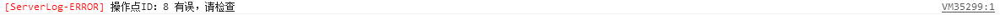

【用户行为统计说明】v2.0
【前端埋点】
/**
* @name Utils#serverLog
* @function
* @desc 记录用户操作行为日志。
* @param {Number} operateid
* @return {String} content
*/
mining.utils.serverLog(ID, content);//用户行为记录
【测试说明】
每个 操作点 对应操作完毕后，F12在Console控制台会有log状态输出，如下
成功：
失败：
失败：
【操作点列表】
| 序号 | 操作点 | 操作内容 | ID |
|---|---|---|---|